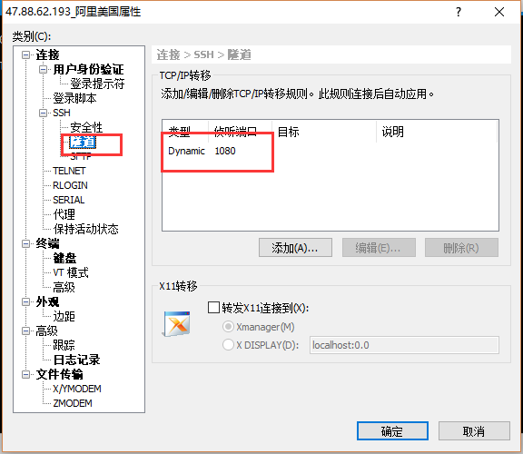
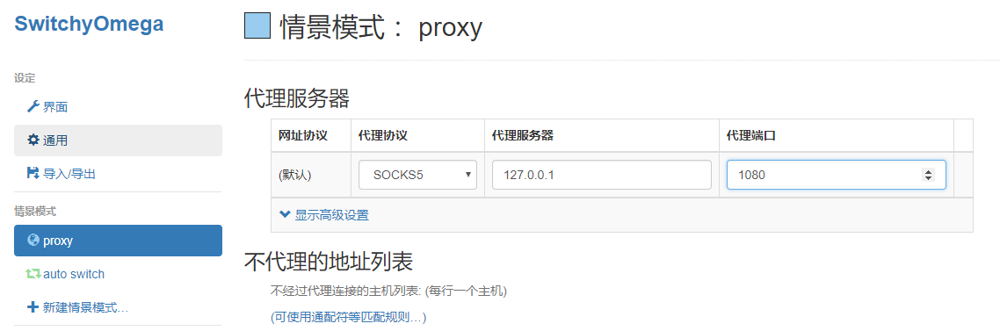
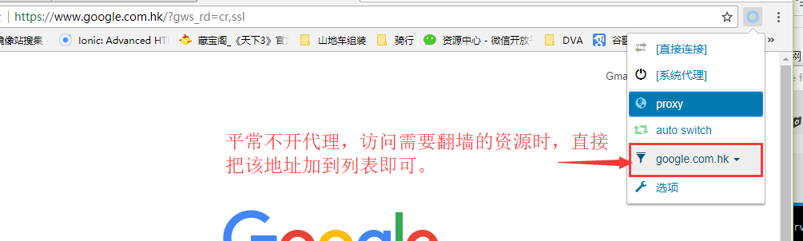

关于翻墙
2017/11/08
一直来翻墙挺少。最开始的是GoAgent，很好用，后来GAE被墙了；用过30块钱一个月的，后来没续费；后面其实直接用Google的一些镜像（经常变），如果下载一些国外的东西其实迅雷也是很好用的。
前 些天在公司搭了一个OpenVPN，加上双十一打折，3年ECS才720块，真心便宜。 然后就买了一个硅谷节点，寻思着搭个OpenVPN来免费翻墙。 在买这节点前，还专门用海外APPStore账号下了一个IOS OpenVPN客户测试手机是否能使用。
最终在该节点上搭了OpenVPN，却发现客户怎么也连不上，爬了一些文，才发现主流的VPN协议包都被 长城防火墙 拦截了。后来尝试了ShadowSocks，发现也不行，，后来试过给搭一个通道，将VPN协议加密再解密（失败了）。 之前用RedHat免费的空间时，曾经用SSH客户端+Socket5通道试过免费翻墙（开始还好，但是后来很不稳定，就放弃了），于是用XShell开了一个Socket5代理，结果可以成功。
注意：Socket5 不能直接建立在海外节点上， 也要被墙。只有先在本地局网通过SSH建立连接后，再使用本地局网的Socket5代理
步骤
第一步建立Socket5通道
如果是本地Windows或PC，通过XShell或Putty之类的SSH工具建立即可。(参见以下设置，最后建立连接即可)

如果在公司，有稳定的局网，找一台linux机器，用下面命令创建Socket5通道。 优点是不用打开XShell，一个局网的人都能使用这个通道。
ssh -qTfnN -D IP:1080 -p 22 user@47.90.63.13
第二步在浏览器中配置Socket5代理。
IE、FireFox都支持Socket 5代理 ，这里推荐使用Chrome + SwitchyOmega 。 SwitchyOmega的前身是Proxy SwitchySharp（现在这个插件在Chrome里经常崩溃），推荐的方式是一般情况下不打开代理 ，访问需要翻墙的资源时，直接点插件将域名加到代理列表中去即可。 好处就是，对于国内的一些资源 ，实在没必要走代理。
SwitchyOmega 网盘地址： http://pan.baidu.com/s/1bpLciQz 密码：6dq9


IOS
需要一个在线可访问的pac文件，http://192.168.0.51/vpn/worker.pac 内容如下
function FindProxyForURL(url, host){ if (isInNet(host, "192.168.0.0", "255.255.0.0")) return "DIRECT"; return "SOCKS 192.168.0.51:7777"; }
WIFI网络代理，自动模式，填入该URL即可。